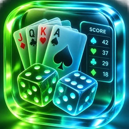

Spiele-Block
Punkte zählen für Watten, Canasta, Leitern, „30 ab“, Schafkopf, Skat und Darts
Spiele-Block ersetzt den Block und den Stift am Spieltisch. Die App rechnet die Punkte mit, zeigt, wer vorne liegt, und merkt sich das laufende Spiel. Sie läuft auf iPhone und iPad, ganz ohne Konto, Werbung oder Internet.
Seit Version 1.1 gibt es dazu ein Spielarchiv mit allen beendeten Partien, eine Statistik, den Punkteverlauf als Diagramm, das Ergebnis als Bild zum Teilen und das Freie Spiel für alles, was die App nicht kennt. Mit Version 1.2 sind Schafkopf, Skat und Darts dazugekommen.
Kontakt
Fragen, Fehler oder Wünsche? Schreib mir gern:
t.seifert@flexitsolutions.de
Hilfreich bei Fehlern: Gerät, iOS-Version und kurz, was du gemacht hast.
Häufige Fragen
Wo werden meine Spielstände gespeichert?
Nur auf deinem Gerät. Jede Eingabe wird sofort gespeichert, auch wenn du die App schließt. Es wird nichts ins Internet übertragen.
Ich habe mich vertippt. Wie mache ich das rückgängig?
Tippe im Spiel oben rechts auf den gebogenen Pfeil („Rückgängig“). Die App merkt sich je Spiel die letzten 50 Schritte.
Wie starte ich ein neues Spiel?
Wähle auf der Startseite das Spiel aus. Läuft dort schon ein Spiel, findest du oben rechts im Menü (•••) „Neue Partie …“. Lege die Spieler bzw. Teams fest und tippe auf „Spiel starten“. Pro Spielart gibt es immer ein laufendes Spiel.
Gehen meine Spielstände verloren, wenn ich die App lösche?
Ja. Da die Daten nur auf dem Gerät liegen, sind sie mit dem Löschen der App weg. Bei einem normalen Update bleiben sie erhalten.
Welche Spiele gibt es?
- Watten – 1 gegen 1, zu dritt oder 2 gegen 2, bis zum Zielstand, mit „gespannt“
- Canasta – zu zweit, zu dritt oder zu viert in zwei Teams, mit Rundenrechner
- Leitern – nach den bekannten Leitern-Regeln
- 30 ab – Würfelspiel: Alle starten mit 30, wer auf 0 fällt, ist raus
- Schafkopf – zu viert oder zu fünft, mit einstellbarem Tarif, Laufenden, Klopfen, Ramsch oder Stock
- Skat – zu dritt oder zu viert, die App rechnet den Spielwert und die Wertung nach Seeger-Fabian
- Darts – 301, 501 oder 701 für 1 bis 8 Spieler, jeder Dart einzeln, mit Finish-Vorschlägen
- Freies Spiel – ein Zähler für jedes andere Spiel, mit eigenem Namen
Was ist das Freie Spiel?
Ein Zähler für jedes Spiel, das Spiele-Block nicht kennt. Gib ihm einen Namen, zum Beispiel „Uno“, und trage bei jedem Spieler Punkte mit Plus oder Minus ein. Es gibt kein Ziel und keinen Sieger – mit „Partie beenden“ siehst du den Endstand.
Wo finde ich frühere Partien?
Im Optionsmenü (Zahnrad oben rechts auf der Startseite) unter „Spielarchiv“. Dort steht jede beendete Partie mit Datum, Sieger und allen Runden – außer beim Freien Spiel. Einträge kannst du per Wischen löschen.
Wie funktioniert die Statistik?
Im Optionsmenü unter „Statistik“: Siege, Partien und Siegquote je Spieler, auch je Spiel, dazu die längste Siegesserie, bei Leitern die Trefferquote der Schätzungen, bei Schafkopf und Skat die gewonnenen Alleinspiele, bei Darts Average, Doppelquote und hohe Aufnahmen – und einige Rekorde. Spieler werden an ihrem Namen erkannt – gib also jedes Mal denselben Namen ein.
Kann ich den Verlauf einer Partie sehen?
Ja. Schalte über der Liste von „Liste“ auf „Diagramm“. Ein Tipp auf eine Runde zeigt die Stände danach. Bei Darts zeigt das Diagramm den Rest je Aufnahme im laufenden Leg.
Wie teile ich ein Ergebnis?
Nach dem Sieg und im Spielarchiv gibt es „Ergebnis teilen“. Es erzeugt ein Bild mit Podest und Rangliste, das du zum Beispiel per Nachricht verschicken kannst.
Wo finde ich die Spielregeln?
In jedem Spiel oben über das Symbol ⓘ: Dort steht, wie die App zählt, und eine kurze Zusammenfassung der Regeln.
Warum geht der Bildschirm nicht aus?
Solange Spiele-Block geöffnet ist, bleibt der Bildschirm an – praktisch am Spieltisch. Das lässt sich im Optionsmenü unter „Einstellungen“ ausschalten. Dort kannst du auch die Bewegung der Figuren, die Logo-Animation und das Vibrieren abschalten.